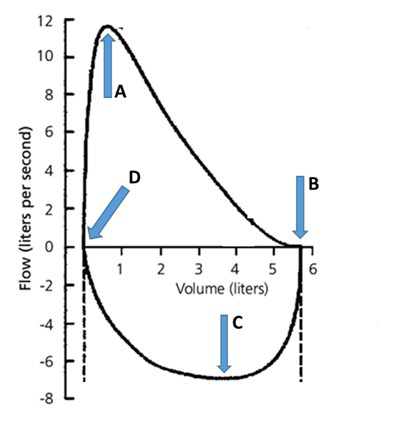
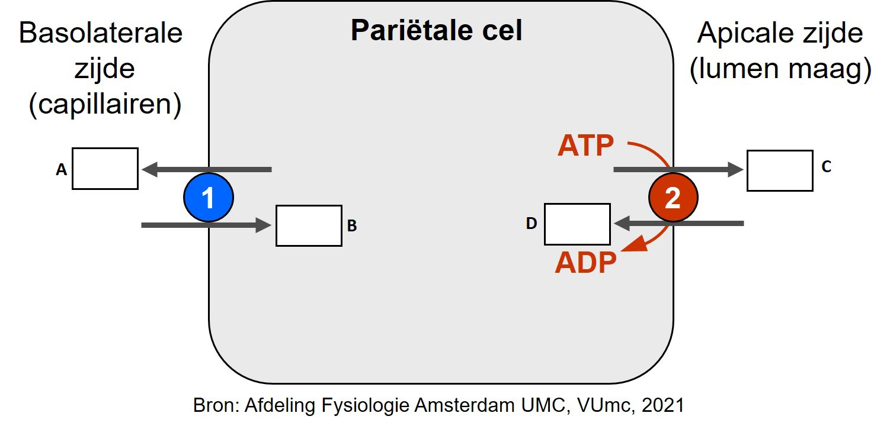
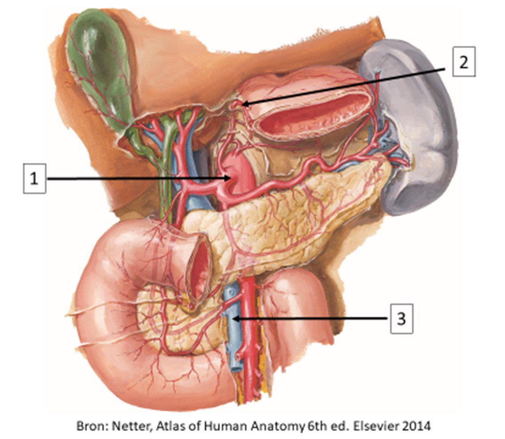
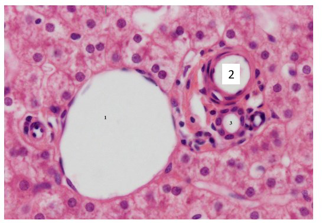
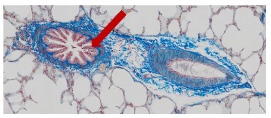
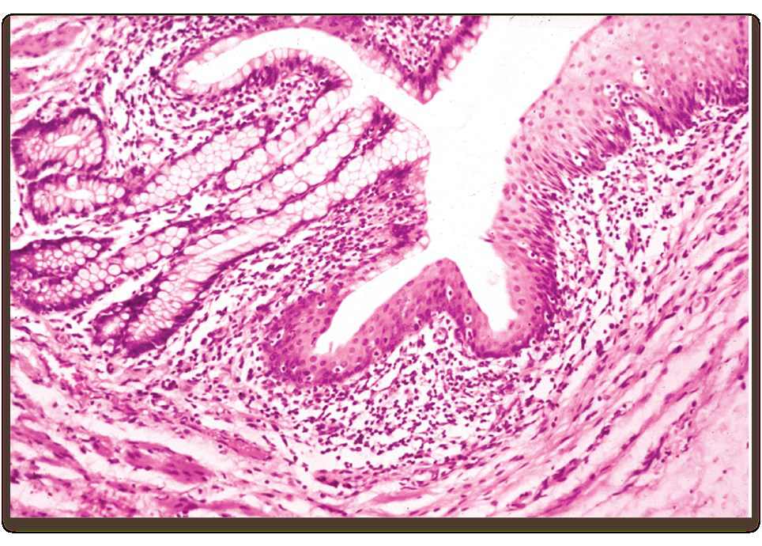

Al je antwoorden worden gewist en je begint opnieuw. Weet je het zeker?
Jouw resultaten
Metabole systemen · 2e Toetsmoment 2021‑2022
—
/ 52
0
Goed
0
Fout
0
Niet beantwoord
Vraag 1
Waar begint in de bovenstaande Flow/Volume curve de proefpersoon met rustig inademen?

Vraag 2
Bij een pneumothorax (klaplong) laat het longoppervlak en de thoracale wand van elkaar los.
Welke uitspraak is daarbij juist? I. een pneumothorax is een voorbeeld van een restrictieve longaandoening II. de transpulmonale druk wordt groter
Vraag 3
Een proefpersoon, met een normale (anatomische) dode ruimte van 150 ml, heeft bij zware inspanning een teugvolume (tidal volume) van 650 ml en een ademfrequentie van 30.
Wat is het alveolaire minuut volume (alveolaire ventilatie) van deze persoon?
Vraag 4
Wanneer is er een verhoogde alveolaire PO2 te verwachten?
Vraag 5
Welk longvolume wordt extra aangesproken als iemand maximaal inademt?
Vraag 6
Wat is binnen 12 uur het effect van een maaltijd op het basaalmetabolisme?
Vraag 7
Welke ademhalingssensoren zijn onderdeel van een positief feed-forward systeem?
Vraag 8
Kies de juiste alternatieven.
Het (pacemaker) centrum voor het ademhalingsritme (respiratory rhythmicity center) bevindt zich in de . En het pneumotactische centrum de ademhaling.
Vraag 9
Welk mechanisme kan leiden tot een lage zuurstofspanning (O2 saturatie) bij centrale adipositas?
Vraag 10
Indien bij een patiënt langdurig sprake is van een lage zuurstofspanning (O2 saturatie), kan het lichaam dit op verschillende manieren compenseren.
Welk compensatiemechanisme wordt niet gebruikt?
Vraag 11
Welk van onderstaande factoren bepaalt de frequentie van depolarisatie-repolarisatie cycli van het basaal elektrisch ritme van het gladde spierweefsel in het spijsverteringskanaal?
Vraag 12
Welk van onderstaande typen neuronen zijn de efferente neuronen bij een korte reflexboog in het spijsverteringskanaal?
Vraag 13
Welk hormoon stimuleert welk proces? Maak drie correcte combinaties.
Sleep een optie naar de bijbehorende rij, of tik eerst op een kaart en dan op een rij.
Contractie van de galblaas
Sleep hier naartoe
Secretie van HCO3- door de pancreas
Sleep hier naartoe
Secretie van maagzuur
Sleep hier naartoe
Vraag 14

Bovenstaande figuur geeft een schematische weergave van een pariëtale cel. Bij het proces van secretie door dit celtype spelen een uitwisselaar (1) en ATPase pomp (2) een belangrijke rol. Sleep de ionen naar de juiste vakjes; de pijl geeft aan in welke richting het betreffende ion wordt getransporteerd. (NB: ion-kanalen zijn niet in deze figuur opgenomen.)
Sleep een optie naar de bijbehorende rij, of tik eerst op een kaart en dan op een rij.
Vakje A (basolateraal, naar capillair)
Sleep hier naartoe
Vakje B (basolateraal, de cel in)
Sleep hier naartoe
Vakje C (apicaal, naar lumen maag)
Sleep hier naartoe
Vakje D (apicaal, de cel in)
Sleep hier naartoe
Vraag 15
Wat veroorzaakt spijsverteringsproblemen bij patiënten met taaislijmziekte (cystic fibrosis)?
Vraag 16
Op welke manier worden vetzuren opgenomen door epitheelcellen van de dunne darm?
Vraag 17
Wat is de functie van het enzym enterokinase (ook wel 'enteropeptidase' genoemd) in het duodenum?
Vraag 18
Welke drie van onderstaande processen worden gestimuleerd door glucagon?
Meerdere antwoorden mogelijk.
Vraag 19
Welke van de onderstaande beweringen over co-factoren in enzymreacties is waar?
Vraag 20
Kies de juiste alternatieven.
In spieren kan men verschillende types spierweefsel onderscheiden, namelijk rood en wit spierweefsel. Ten opzichte van wit spierweefsel, bevat rood spierweefsel meer en kan daardoor per tijdseenheid ATP genereren voor spiercontractie.
Vraag 21
Spiercellen hebben de GLUT4 glucose transporter om glucose op te nemen uit het bloed.
Wat is kenmerkend voor deze GLUT4 transporter?
Vraag 22
Galzouten zijn essentieel in de vertering van vetten in ons dieet.
Wat is de rol van galzouten in dit proces?
Vraag 23
Wat is de onderliggende oorzaak van lactose intolerantie?
Vraag 24
Het gebruik van paracetamol kan levensbedreigend zijn bij chronische alcoholmisbruikers.
Waarom is dat?
Vraag 25
Polymorfismen in het alcohol dehydrogenase (ADH1) enzym komen veelvuldig voor in de humane populatie. De ADH1 variant ADH1B*2 heeft bijvoorbeeld een 20x hogere katalytische activiteit dan het wildtype enzym.
In vergelijking met mensen met het wildtype enzym zullen personen met deze ADH1B*2 variant:
Vraag 26
Bekijk de afbeelding. Sleep de nummers naar de juiste structuur.
Sleep een optie naar de bijbehorende rij, of tik eerst op een kaart en dan op een rij.
Corpus sterni
Sleep hier naartoe
m. intercostalis internus
Sleep hier naartoe
Costa spuria
Sleep hier naartoe
Vraag 27
Kies de juiste alternatieven.
Bekijk de afbeelding. Welke structuren worden met de nummers aangeduid? — 3: . 24: .
Vraag 28
Onder welk bloedvat door verloopt de n. laryngeus recurrens sinister terug omhoog richting de larynx?
Vraag 29

Bekijk de afbeelding. Sleep de nummers naar de juiste structuur.
Sleep een optie naar de bijbehorende rij, of tik eerst op een kaart en dan op een rij.
truncus coeliacus
Sleep hier naartoe
a. gastrica sinistra
Sleep hier naartoe
v. mesenterica superior
Sleep hier naartoe
Vraag 30
Wat zijn karakteristieke morfologische kenmerken van het jejunum? Kies drie juiste antwoorden.
Meerdere antwoorden mogelijk.
Vraag 31
Bekijk de afbeelding. Benoem voor de organen aangeduid met de nummers wat hun peritoneale ligging is.
Kies de juiste alternatieven.
Bekijk de afbeelding. Benoem voor de organen aangeduid met de nummers wat hun peritoneale ligging is. — 1: . 2: . 3: .
Vraag 32
Kies de juiste alternatieven.
Uit welk deel van de embryonale primitieve darm zijn de organen ontstaan? — Galblaas: . Colon sigmoideum: . Colon ascendens: .
Vraag 33
Een pasgeborene heeft een aangeboren afwijking: een deel van de darmen ligt buiten de ventrale abdomenwand, via een opening net lateraal van de navel. De buiten het abdomen liggende darmen zijn niet omgeven met een dun vlies.
Wat is de meest waarschijnlijke diagnose?
Vraag 34
Bekijk de afbeelding. U ziet hier een opname van een driehoekje van Kiernan (portal triad) in de lever. Welke structuur wordt aangegeven met het cijfer 2?

Vraag 35
Kies de juiste alternatieven.
Alveoli worden bekleed door die gekenmerkt worden door een regenererend vermogen door celdeling.
Vraag 36
Bekijk de afbeelding. U ziet hier een preparaat van de long waarbij de collageenvezels blauw aankleuren. Welke structuur wordt weergegeven met de rode pijl?

Vraag 37
Kies de juiste alternatieven.
Bij de maagingang vindt men een abrupte overgang van het epitheel van de oesophagus in het epitheel van de maag.
Vraag 38
Bekijk de afbeelding. Van welke overgang in het tractus digestivus ziet u hier een opname?

Vraag 39
Micro-organismen uit ons eigen microbioom, de zogenoemde commensalen, kunnen in sommige gevallen ook infecties geven. Een 21-jarige studente krijgt pijn bij het plassen en moet vaker kleine beetjes plassen. Je denkt aan een urineweginfectie (blaasontsteking).
Welk micro-organisme is meest waarschijnlijk de verwekker?
Vraag 40
Een patiënt komt op het spreekuur met klachten van een toegenomen defecatiefrequentie (twee maal per dag) en een minder gevormde ontlasting. De klachten houden al drie weken aan.
Is er, op basis van de criteria die daar voor gelden, sprake van diarree?
Vraag 41
Welke twee van onderstaande condities zijn een oorzaak van osmotische diarree?
Meerdere antwoorden mogelijk.
Vraag 42
Levercirrose leidt tot welke vorm van hypertensie?
Vraag 43
Door veroudering verandert ook de stem. Het effect van veroudering op de stem is verschillend voor mannen en vrouwen.
Wat is het effect op de gemiddelde spreekstemhoogte voor mannen en vrouwen?
Vraag 44
Op een dag komen er drie patiënten bij de huisarts. Ze zijn alle drie sinds twee dagen aan het hoesten en ze hebben alle drie sinds twee dagen koorts. De huisarts doet de volgende bevindingen: Patiënt A: Vrouw 73 jaar, rookt. Heeft eenmaal streepje bloed gehoest. Bij auscultatie verlengd piepend expirium. Patiënt B: Man 33 jaar, rookt. Heeft tweemaal streepje bloed gehoest. Bij auscultatie brommende en piepende rhonchi over beide longen. Patiënt C: Man 55 jaar, rookt niet. Bij auscultatie eenzijdig crepiteren links basaal.
Bij welke patiënt kan de huisarts het beste een X-thorax aanvragen?
Vraag 45
Welke twee symptomen passen meer bij inflammatory bowel disease (IBD) dan bij prikkelbaredarm syndroom (PDS)?
Meerdere antwoorden mogelijk.
Vraag 46
Een vrouw van 54 jaar komt bij de huisarts omdat ze zwarte plakkerige ontlasting heeft gehad (melena). Uit aanvullend laboratorium onderzoek blijkt dat ze een ijzergebreksanemie heeft.
Wat is nu het aanvullende onderzoek dat als eerst uitgevoerd moet worden?
Vraag 47
Een man van 69 jaar komt bij de huisarts. Hij is sinds een maand toenemend kortademig. Als hij één trap oploopt dan moet hij daarna al rust nemen. Hij heeft COPD waarvoor hij luchtwegverwijders gebruikt. De huisarts verricht lichamelijk onderzoek (LO).
Welke bevinding bij LO vergroot de kans op aanwezigheid van hartfalen bij deze man het meest?
Vraag 48
Een man van 64 jaar heeft de laatste maanden last van kortademigheid bij inspanning. Hij heeft zijn hele leven veel gerookt (pakje/dag sinds zijn 15e). De huisarts overweegt COPD en laat spirometrie uitvoeren.
Welke bevinding bij spirometrie ondersteunt de diagnose COPD het meest?
Vraag 49
Wat is geen alarmsymptoom bij chronische obstipatie?
Vraag 50
Wat is overloop incontinentie?
Vraag 51
Wat is een belangrijke oorzaak van gastro-oesofageale reflux bij zwangere vrouwen aan het einde van de zwangerschap?
Vraag 52
Vezels in onze voeding omvatten een groep stoffen van plantaardige oorsprong die als gemeenschappelijk kenmerk hebben dat ze niet worden verteerd of opgenomen in onze dunne darm. Voorbeelden zijn pectine, lignine, onverteerbaar zetmeel en cellulose. Cellulose is een polymeer van glucosemoleculen die onderling verbonden zijn door β 1,4 glycoside bindingen. In tegenstelling tot zetmeel, waar de glucose eenheden door een α 1,4 glycosidebinding gekoppeld zijn, kan cellulose niet door ons spijsverteringsysteem worden afgebroken tot de samenstellende glucose eenheden. De aanwezigheid van reducerende aldehydegroepen in suikers kan afgeleid worden uit een positieve Fehling reactie. In een positieve reactie wordt het Cu2+ in het Fehling reagens gereduceerd tot Cu+ door de aldehyde groep in het suiker, hetgeen resulteert in een rode kleur.
Welke uitspraak met betrekking tot de uitkomst van een Fehling reactie uitgevoerd op cellulose is waar?